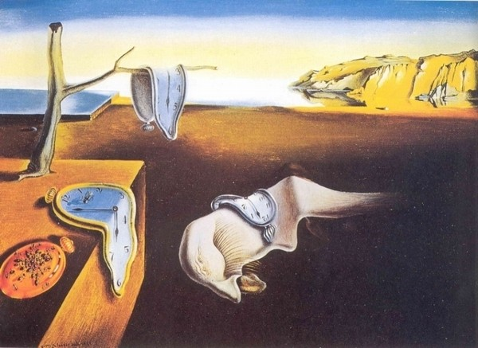
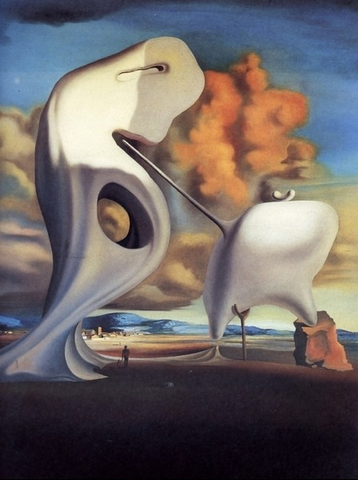
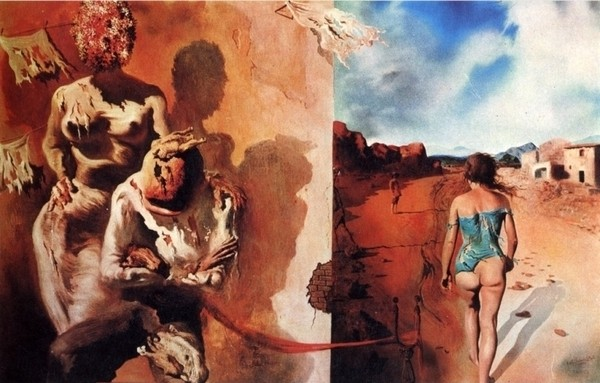
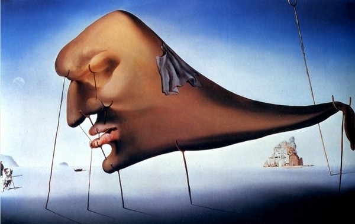
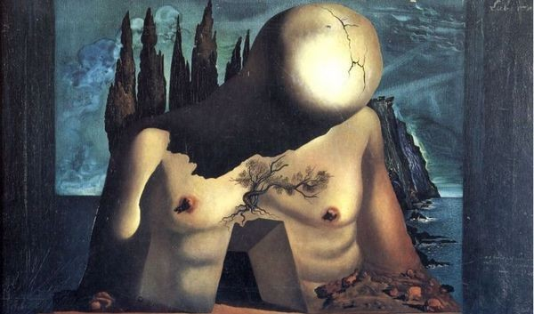
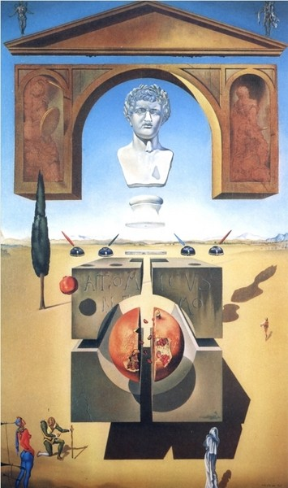
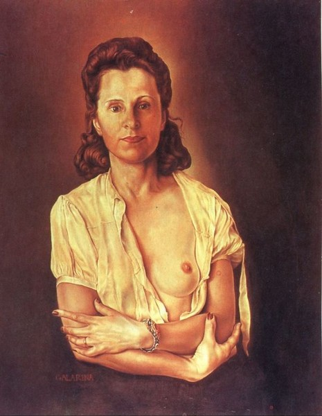

Постоянство памяти (1931)
Холст, масло

Архитектонический «Анжелюс» Милле (1933)
Холст, масло

Сон, возлагающий руку на мужскую спину (1934)
Дерево, масло

Сон (1937)
Холст, масло

Эскиз декорации для балета «Лабиринт» (1941)
Холст, масло

Расщепление атома (1947)
Холст, масло

Галарина (1944-1945)
Холст, масло
